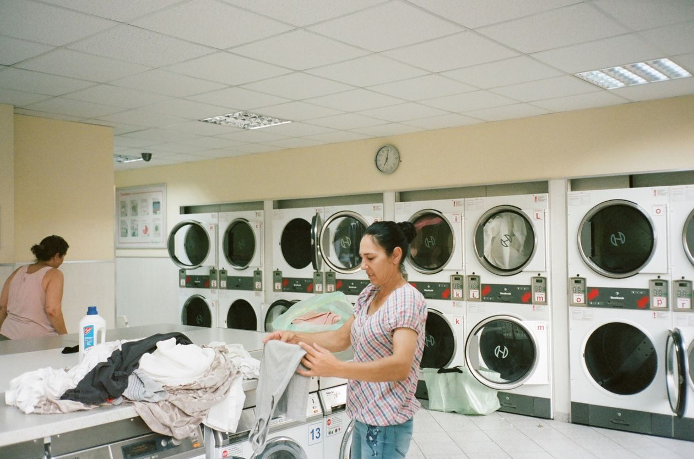
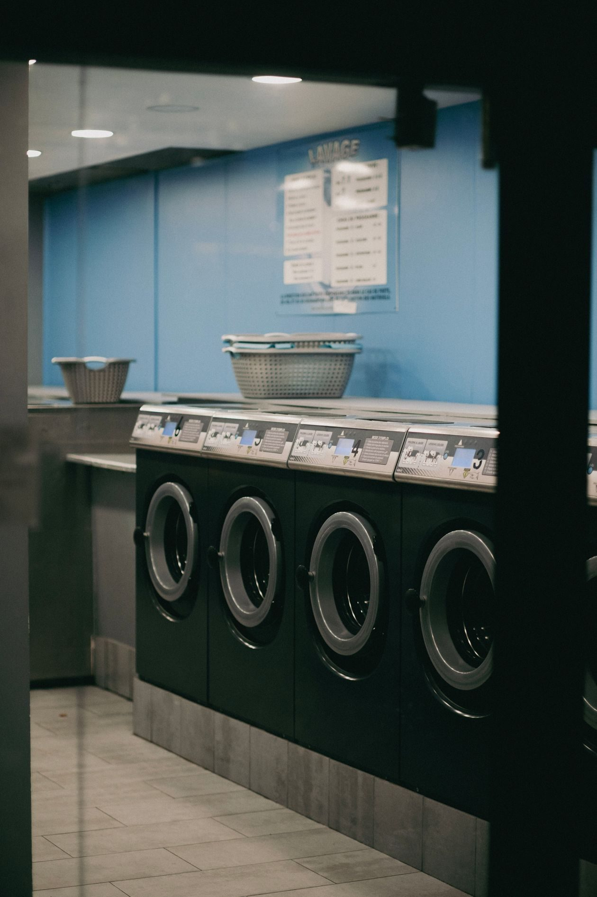

Inside


A laundromat in Tulsa
University of Wash is a self-service laundromat with front-load washers and dryers, drop-off service, arcade games, a pool table, a bar with beer on tap and in bottles and sandwiches, free WiFi, and study nooks.

University of Wash sits at 3132 E 15th St in Tulsa. It is a self-service laundromat with front-load washers and dryers, plus drop-off service, arcade games, a pool table, and a bar.

3132 E 15th St, Tulsa, OK 74104
Open daily, 11:00 AM to 11:00 PM